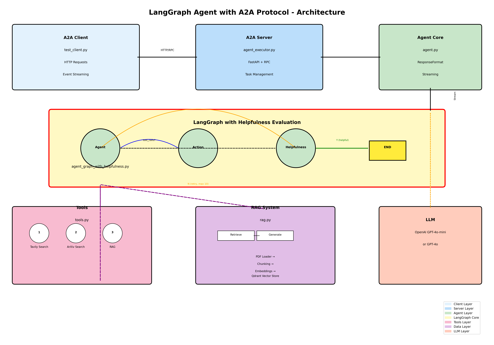
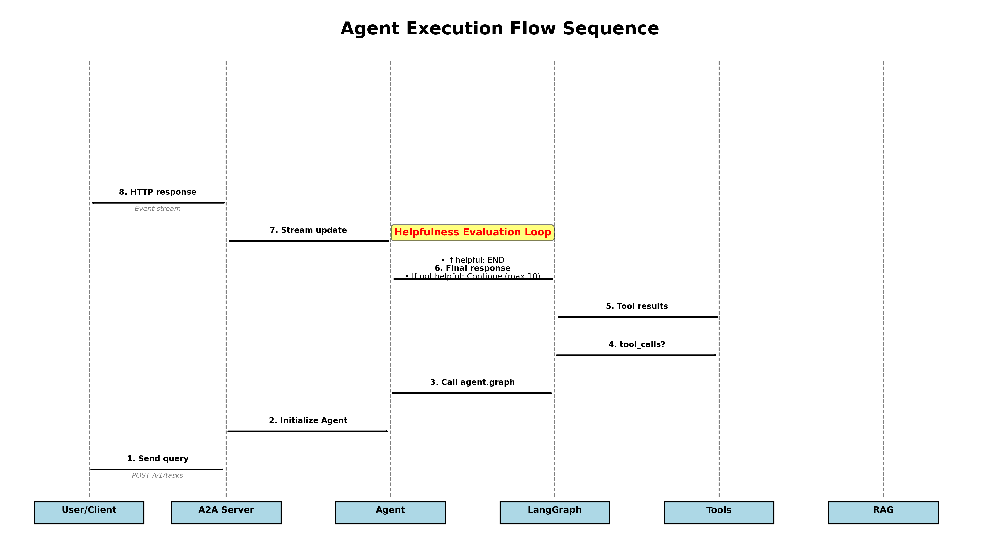

📊 Overview
This LangGraph agent implements an A2A (Agent-to-Agent) protocol with built-in helpfulness evaluation. It combines multiple data sources through a unified tool belt and uses a feedback loop to ensure response quality.
🎯 A2A Protocol
Agent-to-Agent communication standard with RESTful API and event streaming
🔁 Helpfulness Loop
Self-evaluation of response quality with automatic retry mechanism
🛠️ Multi-Tool Integration
Web search, academic papers, and document RAG retrieval
💬 Streaming Responses
Real-time updates through event-based communication
🏗️ System Architecture
Component Diagram (PNG)

This diagram shows the complete system architecture from client to tools, including the LangGraph workflow with helpfulness evaluation.
Interaction Sequence (PNG)

Sequence diagram showing the flow of messages and agent execution steps.
📐 Interactive Architecture (Mermaid)
test_client.py] end subgraph "Server Layer" SERVER[A2A Server
agent_executor.py
FastAPI + RPC] end subgraph "Agent Layer" AGENT[Agent Core
agent.py
ResponseFormat] end subgraph "LangGraph Core" direction TB A[Agent Node
LLM + Tools] B[Action Node
Tool Execution] C[Helpfulness Node
Quality Check] D[END State] A -->|tool calls?| B B -->|return results| A A -->|no tools| C C -->|Y helpful| D C -->|N retry max 10| A end subgraph "Tools" T1[Tavily Search
Web Search] T2[ArXiv Search
Papers] T3[RAG Retrieval] end subgraph "RAG System" direction LR R1[PDF Loader] R2[Text Chunker] R3[Embeddings] R4[Qdrant Vector Store] R5[Retrieve] R6[Generate] R1 --> R2 --> R3 --> R4 --> R5 --> R6 end subgraph "LLM" LLM[OpenAI GPT-4o-mini
or GPT-4o] end CLI -->|HTTP/RPC| SERVER SERVER --> AGENT AGENT -->|Stream| A A <-->|tool calls| T1 A <-->|tool calls| T2 A <-->|tool calls| T3 T3 -.->|uses| R5 A <-->|queries| LLM C <-->|evaluates| LLM style A fill:#FFF9C4 style B fill:#FFF9C4 style C fill:#FFF9C4 style D fill:#FFEB3B
🔄 Execution Flow
🎮 State Flow
if iter < 10 Decision --> END : Y (helpful)
OR iter >= 10 END --> [*] note right of Decision Evaluates response quality - Accurate information? - Complete answer? - Appropriate tools used? end note
🔧 Key Components
| Component | File | Purpose |
|---|---|---|
| A2A Server | agent_executor.py | FastAPI server implementing A2A protocol with task management |
| Agent Core | agent.py | Agent class with streaming and ResponseFormat structure |
| LangGraph | agent_graph_with_helpfulness.py | Main graph with helpfulness evaluation loop |
| Tools | tools.py | Tool belt configuration (Tavily, ArXiv, RAG) |
| RAG System | rag.py | Document retrieval and Q&A with vector store |
| Test Client | test_client.py | Client for testing agent API |
📡 Response States
The agent can return three different states:
| State | Description | User Action |
|---|---|---|
| input_required | Agent needs more information from the user to complete the request | Provide clarification |
| completed | Task has been successfully finished | Review the result |
| error | An error occurred during processing | Retry or report issue |
🛠️ Tool Reference
| Tool | Purpose | Data Source |
|---|---|---|
| Tavily Search | Real-time web search | Internet |
| ArXiv Search | Academic paper search | ArXiv API |
| RAG Retrieval | Document question and answer | Local PDFs |